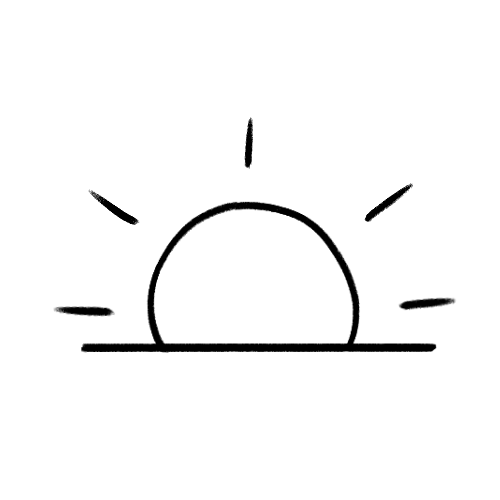

My name is Kristen Noble,

I'm currently studying Web Development at SAIT
| Why Web Development? | Why SAIT? | Future Goals |
|---|---|---|
| I chose to study web development because I enjoy both technology and design. I have studied a little bit of Python and Swift before I began learning HTML & CSS because I want to develop my own apps someday. | I chose SAIT because I have a couple of friends who have graduated from SAIT and they enjoy what they do now. Since SAIT offers generally shorter and more condensed courses compared to universities, it allows me to explore more of my interests. |
The top three things I want to do in the future are:
|